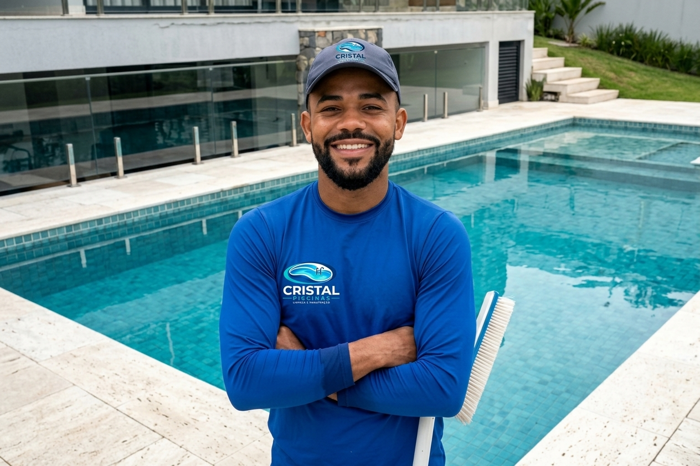
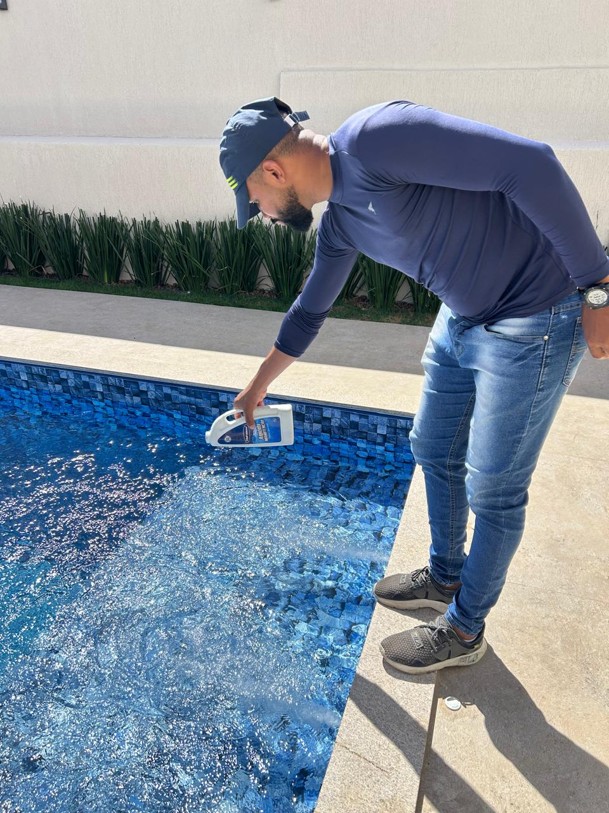
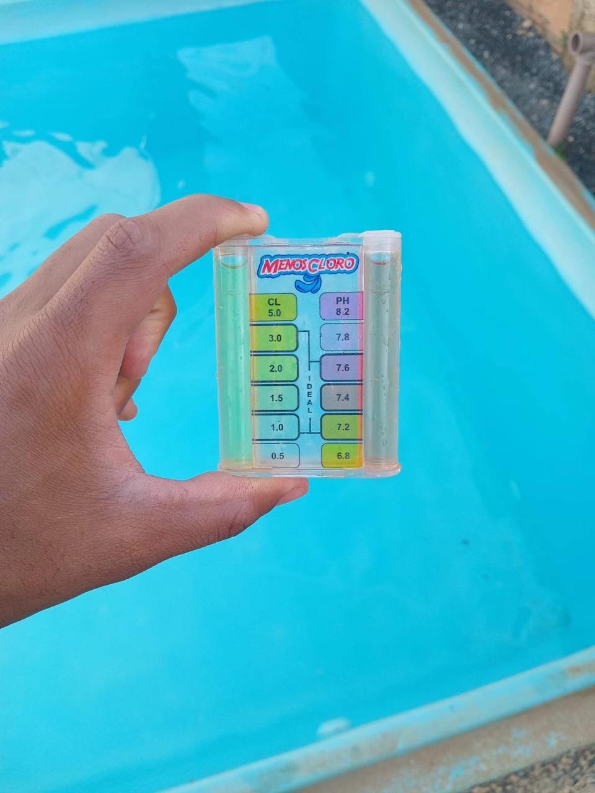
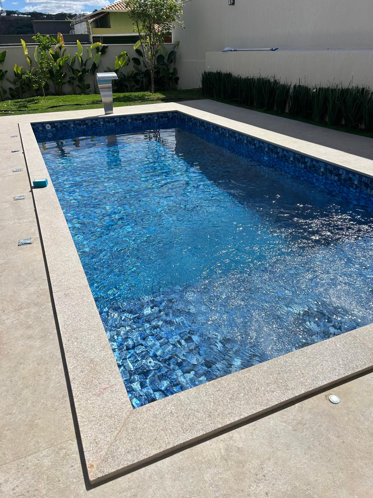
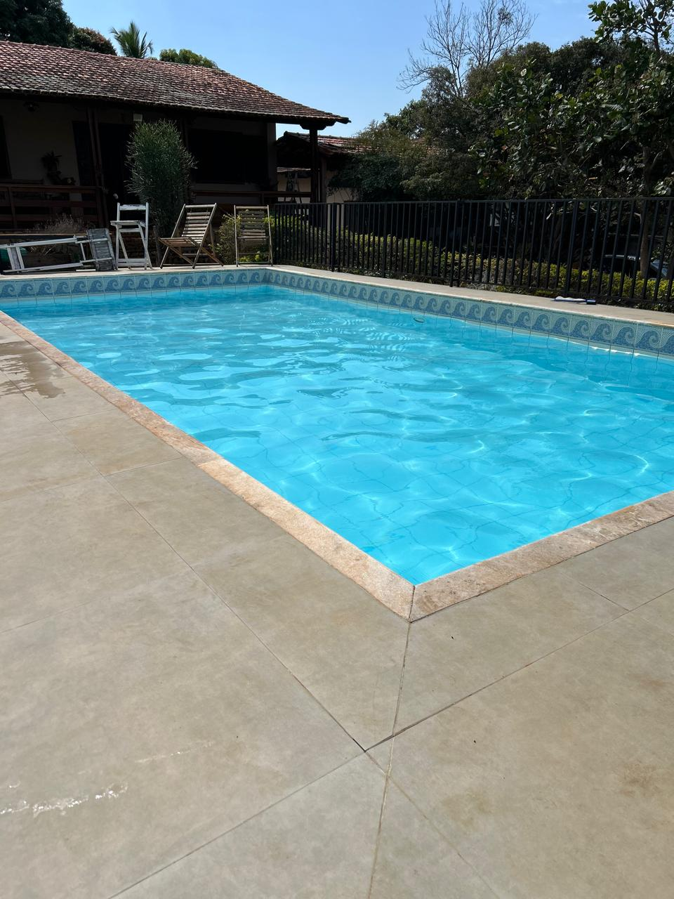
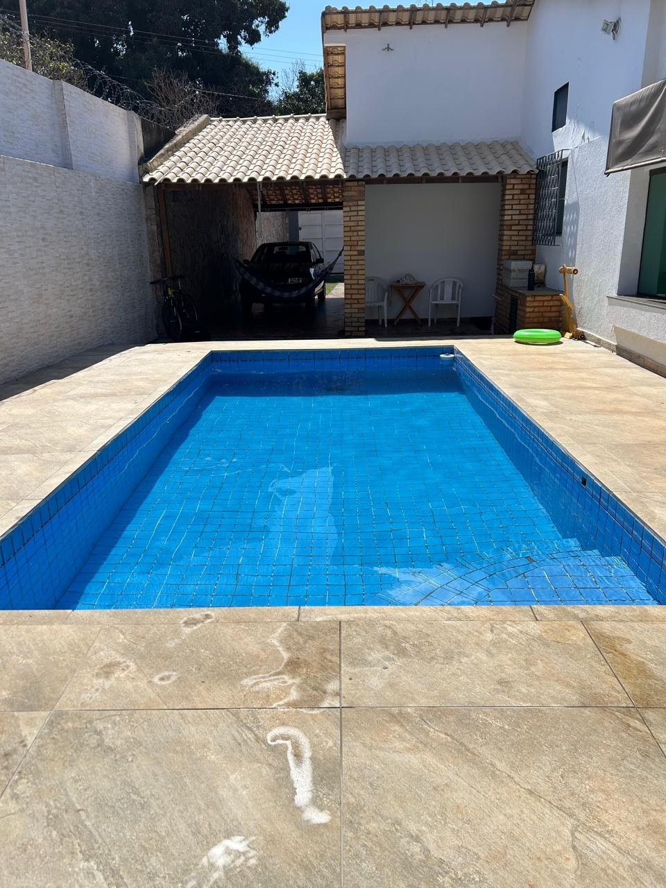
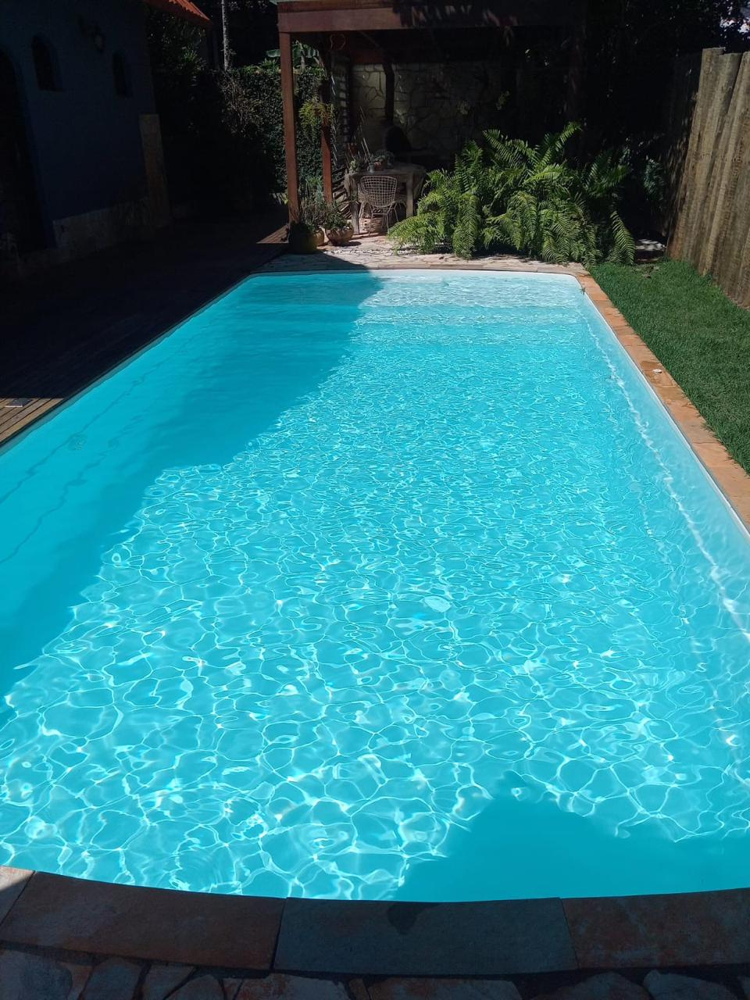

Manutenção e limpeza de piscinas em Lagoa Santa e região, respeito e compromisso com o cliente.

Atendimento sério, direto e sem enrolação — quem usa, continua usando.
Saiba mais →Recuperação de piscina verde e limpeza pesada com prazo combinado e cumprido.
Saiba mais →Você sabe exatamente o que foi feito e por quê, a cada visita.
Saiba mais →Qualidade de serviço sem pesar no bolso.
Saiba mais →Aspiração, escovação e tratamento químico em visitas recorrentes.
Saiba mais →Tratamento de choque e limpeza pesada pra voltar a usar rápido.
Saiba mais →Medição de pH e cloro, ajuste na medida certa pra cada piscina.
Saiba mais →Verificação de bomba, filtro e demais equipamentos do sistema.
Saiba mais →





Fale com nossa equipe pelo WhatsApp e agende sua avaliação sem compromisso.
Chamar no WhatsApp